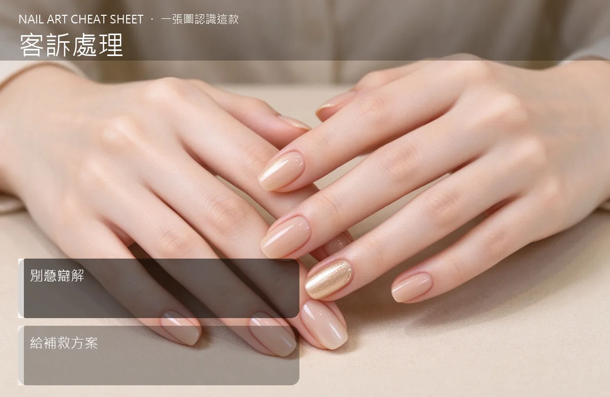

美甲客訴處理是什麼？中階入門攻略
客訴不是壞事——處理得好，生氣的客人會變成鐵粉；處理不好，她會在 IG 把你罵爆。
客訴處理原理與辨識重點：美甲師不說的先聽完
客訴常見就那幾種：起翹太早、顏色和想像不一樣、做到一半被延後、收費和當初講的不同。處理的黃金原則是：先聽完、別急著辯解、認錯要快、補救要具體。客人要的不是你解釋『為什麼會這樣』，而是『你打算怎麼辦』。
誰適合做客訴處理？客訴危機對號入座
還沒遇過客訴、所以完全不知道怎麼回應的新手；或曾經因為一句話把客訴引爆成負評的美甲師。
客訴處理美甲施作步驟：傾聽＋補救
客人一開罵，先做三件事：①讓她說完，不要插話；②道歉要具體（『不好意思讓你不舒服了』，不要說『也不是我的問題啦』）；③給補救選項：『這週末我幫你免費重做一次，或退你一半費用，你選哪個？』。事後當天回訊息、三天後再關心一次。有價值的客人，會因為這次的處理比第一次還信任你。
客訴處理優缺點分析：美甲持久度與傷甲評估
| 優點 | 說明 |
|---|---|
| 你會學到怎麼把壞情緒轉換成信任；很多常客都是從一次客訴救回來的。 | 是通用流派的招牌，中階就能上手 |
| 缺點 | 說明 |
| 碰到真的奧客也會很耗心力，特別是那種動不動就要退全額＋補償的人；要懂得畫界線。 | 前置與三大忌：①馬上回嗆『是你自己敲到的吧』；②在 IG 公開跟她對罵；③答應了補救卻又食言。這些動作一做，小客訴變大災難。沒顧好會打折 |

客訴處理新手雷區：別急辯解與常見錯誤
注意：三大忌：①馬上回嗆『是你自己敲到的吧』；②在 IG 公開跟她對罵；③答應了補救卻又食言。這些動作一做，小客訴變大災難。
客訴處理和其他美甲做法的差別比較
客訴處理跟『退錢』不是同一件事。退錢只是其中一招，有時候她要的只是『被聽見』。她講完、你道歉、她情緒下來了，問題可能就解了一半。
客訴處理美甲常見問題 FAQ
Q：客人在 IG 公開負評怎麼辦？ A：第一時間公開誠懇回應一次，然後請她私訊你。不要公開對戰，旁觀者看的是你態度不是誰對誰錯。
Q：要不要全額退費？ A：看狀況。如果是你的技術問題，大方退或重做；如果是她自己後續保養不當，可以保留責任但還是給折扣。重點是誠意。
Q：客訴之後還要保持聯絡嗎？ A：要。三天後關心一次、一週後詢問狀況。這一步很多人忘記，但它才是把客訴變回客戶的關鍵。